I\ have\ a\ dog\ named\ Cooper\.\ He\ doesn't\ know\ what\ a\ meeting\ is,\ what\ a\ deadline\ is,\ or\ why\ I\ can't\ just\ play\ with\ him\ whenever\ I\ want\.
Cooper\ knows\ three\ things:\ you\ left,\ you\ came\ back,\ and\ —\ is\ it\ Sunday\ yet\?\ Can\ we\ go\ to\ the\ big\ park\?
I\ used\ to\ feel\ guilty\ every\ time\ I\ closed\ the\ door\ and\ heard\ him\ whimper\.\ Can\ a\ 9\-to\-5\ job\ really\ work\ with\ a\ dog\?
Turns out, the question isn't whether it works. The\ question\ is\ how\ you\ set\ it\ up\.\ Good\ gear\ cuts\ weekday\ chores\ in\ half\ and\ doubles\ the\ quality\ of\ your\ weekend\ time\ together\.
Here's\ what\ a\ real\ week\ looks\ like\.
One rule for the workweek: if\ a\ machine\ can\ do\ it,\ let\ it\.
🌅\ 7:00\ AM\ —\ The\ alarm\ goes\ off\.\ So\ does\ the\ dog\.
Cooper\ is\ already\ standing\ by\ my\ bed,\ staring\ at\ me\ like,\ "You're\ awake\.\ Finally\.\ I've\ been\ waiting\ all\ night\."
Before: Stumble downstairs, scoop dog food, refill water bowl, then brush my teeth. Cooper underfoot the whole time. Stress before coffee.
Now: I pet him on the head and head for the sink to brush my teeth. Why?
Because I have an automatic\ pet\ feeder. I set it up once — it holds about 5 liters of dog food, enough to last days. It's programmed to dispense breakfast at 7:05 AM, lunch at noon, and dinner at 6:00 PM. By the time I come downstairs, Cooper has already eaten breakfast. I make my coffee. We hang out for a bit — no rush.
And his water\ fountain keeps fresh water running all day. I clean it once a week instead of scrubbing a slimy bowl every morning. That alone is worth it.
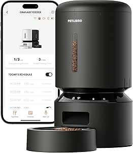
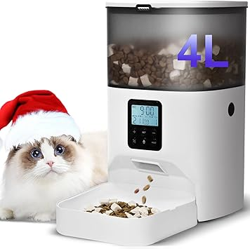
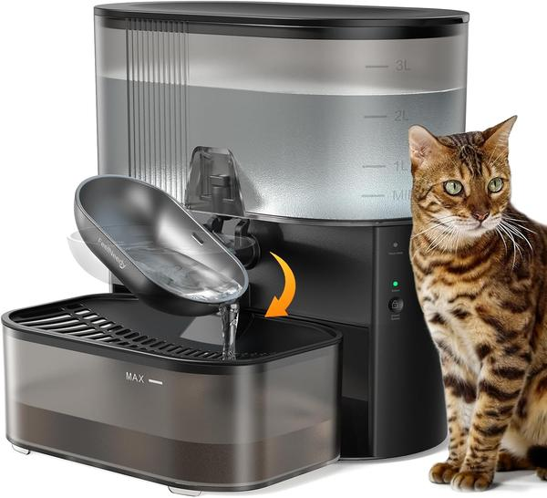
🍳\ 7:30\ AM\ —\ Breakfast\ for\ two
I'm\ eating\ toast\ and\ eggs\.\ Cooper\ has\ finished\ his\ breakfast\ and\ is\ now\ staring\ at\ me\ from\ the\ floor\.\ Translation:\ "Are\ you\ done\?\ Can\ we\ play\?"
Before: Scarf down my food, play for 5 minutes, rush out the door feeling guilty.
Now: I grab a Kong\ toy I stuffed with peanut butter and froze the night before. Cooper takes it and spends 20 minutes licking, rolling, and figuring out how to get every last bit out. I finish my toast in peace.
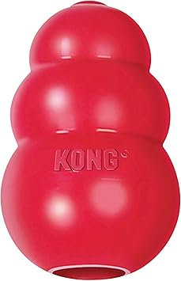
💼\ 9:00\ AM\ —\ 12:00\ PM\ —\ While\ I'm\ at\ work
While I'm in meetings, Cooper is most likely napping on his dog\ bed, or chewing on the Kong I left him.
Before: I'd sit at my desk and just miss the little guy. That first week back after a long weekend was the worst — I kept thinking about him at home, wondering what he was up to. No way to just reach over and pet him. It sucks being away from your best friend for nine hours.
Now: I open the pet\ camera app on my phone for 3 seconds. There he is, curled up on his bed, snoozing away. Just seeing his face makes the rest of the afternoon go by easier.
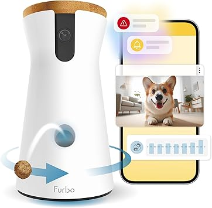
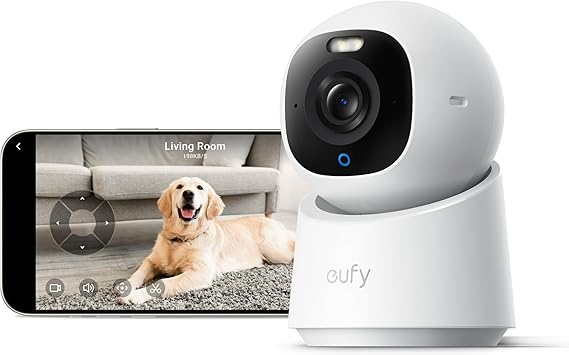
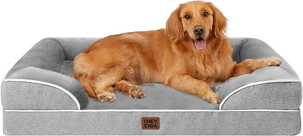
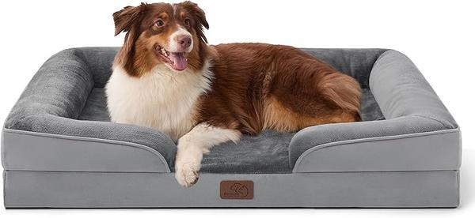
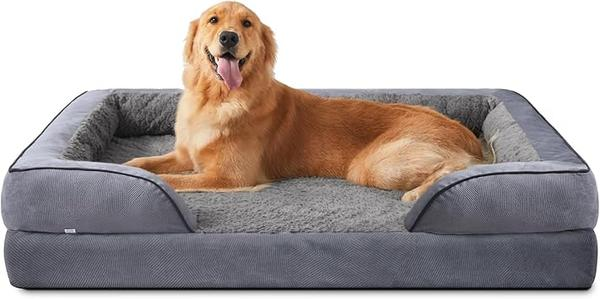
🍱\ 12:00\ PM\ —\ Didn't\ even\ think\ about\ it
At\ noon,\ the\ feeder\ does\ its\ thing\.\ Cooper\ eats\ lunch\.\ I'm\ in\ a\ meeting\.\ Nobody\ had\ to\ go\ home\.
☕\ 3:00\ PM\ —\ Coffee\ break\ \+\ a\ peek\ at\ home
Best\ part\ of\ my\ afternoon\.\ I\ open\ the\ pet\ camera\ app\.\ Cooper\ hears\ my\ voice\ through\ the\ speaker\ —\ ears\ perk\ up,\ tail\ wags\.
I\ tap\ "treat\."\ A\ piece\ flies\ across\ the\ room\.\ Cooper\ loses\ his\ mind\.
Three\ minutes\ of\ this\ and\ I'm\ in\ a\ better\ mood\.\ Way\ better\ than\ scrolling\ Instagram\.
💩\ The\ unsung\ hero\ of\ every\ walk
Here's the thing that changed everything: a telescoping\ poop\ bag\ wand.
It's\ a\ slender\ plastic\ rod\ that\ collapses\ down\ to\ about\ the\ length\ of\ a\ TV\ remote\.\ Lives\ clipped\ to\ my\ leash\.\ When\ I\ need\ it,\ I\ pull\ it\ out\ —\ section\ by\ section\ —\ to\ about\ 24\ inches\.
Clip\ a\ bag\ onto\ the\ ring\ at\ the\ end\.\ Reach\ out\.\ Scoop\.\ Flip\ the\ bag\.\ Tie\ it\.\ Collapse\ the\ wand\.\ Back\ in\ my\ pocket\.
Your\ back\ stays\ straight\.\ Your\ hands\ touch\ nothing\.
Before\ I\ had\ this:\ freezing\ mornings,\ bending\ over,\ fingers\ too\ cold\ to\ open\ a\ bag\.\ Rainy\ days\ with\ an\ umbrella\ in\ one\ hand\ and\ a\ leash\ in\ the\ other\.\ Summer\ heat\ —\ you\ know\ that\ smell\.
Fifteen\ bucks\ fixed\ all\ of\ it\.
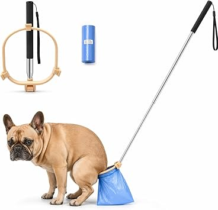
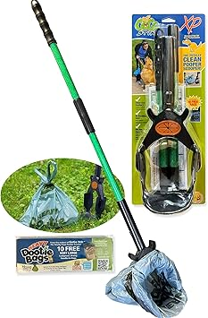
🌆\ 7:00\ PM\ —\ The\ evening\ walk
After\ dinner,\ I've\ had\ a\ chance\ to\ rest\ and\ Cooper\ is\ ready\ to\ go\.
Now\ it's\ time\ for\ the\ real\ walk\ —\ not\ the\ backyard\ pit\ stop\ from\ earlier\.
I clip on the hands\-free\ leash\ belt, grab the telescoping\ poop\ bag\ wand off the hook by the door, and we head out. This time I take the longer route — through the neighborhood, past the park. Coffee tumbler in hand. AirPods in.
For\ 20\ minutes\ I\ can:
• Answer texts I've been ignoring all day 📱
• Call my mom on the walk 📞
• Listen to the latest podcast episode 🎧
• Just enjoy the quiet — which is rare these days 🌳
This\ is\ the\ real\ walk\.\ The\ one\ where\ Cooper\ and\ I\ actually\ hang\ out\ together\ after\ a\ long\ day\.
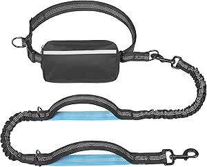
🛋️\ 8:00\ PM\ —\ Couch\ time
Back\ from\ the\ walk\.\ Cooper\ is\ satisfied\.\ I'm\ relaxed\.
I\ settle\ into\ the\ couch\.\ Cooper\ comes\ over\.\ He\ doesn't\ need\ another\ walk\ —\ he\ just\ wants\ to\ do\ something\ together\.
I grab a puzzle\ toy, stuff a few treats in, and let him figure it out. He rolls it around on his bed, totally focused.
I\ watch\ a\ show\.\ He's\ at\ my\ feet,\ busy\ but\ close\.
We're\ doing\ our\ own\ thing,\ but\ together\.\ It's\ the\ best\ kind\ of\ quiet\.
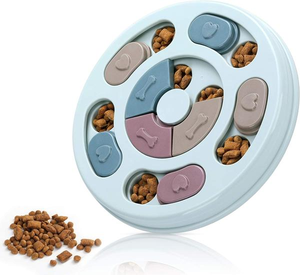
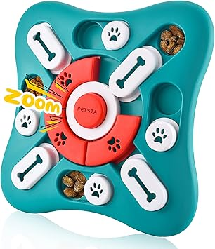
🌙\ 10:00\ PM\ —\ Last\ trip\ before\ bed
Cooper\ has\ been\ dozing\ on\ his\ bed\ for\ a\ couple\ of\ hours\.\ One\ last\ quick\ trip\ to\ the\ backyard\ —\ open\ the\ door,\ he\ runs\ out,\ does\ his\ thing,\ runs\ back\ in\.\ The\ telescoping\ wand\ handles\ the\ rest\.\ Sixty\ seconds\.
Cooper\ curls\ up\ on\ his\ bed\.
I turn off the light and think: I spent maybe 30 minutes actively taking care of him today. But\ we\ had\ real\ moments\ together:
① Breakfast — we ate at the same time
② 3:00 PM — I called his name through the camera and he wagged his tail
③ The evening walk — just the two of us, no rush
④ He played at my feet while I watched TV
That's\ a\ lot\ more\ than\ I\ used\ to\ have\.
Weekdays are for getting things done. Weekends are for actually\ hanging\ out\ with\ your\ dog — while catching up on the stuff you can't do Monday through Friday.
🛌\ Saturday\ morning\ —\ The\ dog\ is\ my\ alarm\ clock
Before: Cooper wakes me at 7 AM by licking my face. Stumble out, walk him immediately (he's been holding it all night), then we're both too tired to do anything productive. Half the morning gone.
Now: The automatic\ feeder handles breakfast. Cooper eats. I sleep an extra 30 minutes.
8:00\ AM\ —\ I'm\ actually\ awake\.\ Leash\ belt\ on\.\ Pocket\ the\ poop\ wand\.\ We\ head\ out\.
Weekend\ walks\ are\ different\. We take the long route to the park. I grab a coffee on the way. Cooper sniffs everything. I'm not rushing anywhere.
Not\ just\ a\ walk\.\ This\ is\ me\ and\ Cooper,\ finally\ hanging\ out\.
🛍️\ Saturday\ afternoon\ —\ Out\ and\ about
A\ hike\ at\ the\ local\ park\.\ Coffee\ on\ a\ dog\-friendly\ patio\.\ Maybe\ a\ quick\ trip\ to\ PetSmart\ for\ supplies\.\ Errands\ are\ better\ when\ Cooper\ is\ along\.
Before I walk out, I tap the robot\ vacuum app. It starts cleaning while we're gone. No more coming home to tumbleweeds of dog hair.
Cooper\ and\ I\ head\ out\ together\.\ The\ house\ gets\ cleaned\ while\ we're\ gone\.\ Win\-win\.
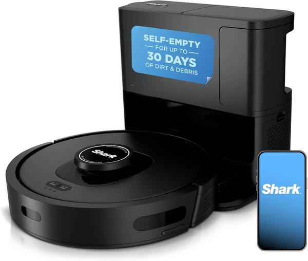
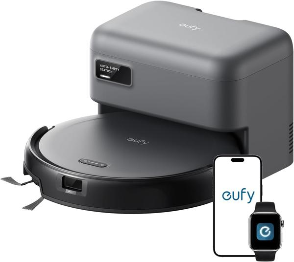
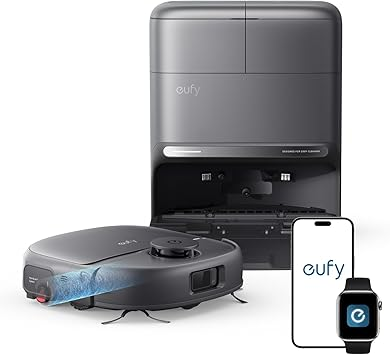
☕\ Sunday\ morning\ —\ Coffee\ \+\ clicker\ training
Sunday\ is\ Cooper's\ favorite\ day\.
Not\ because\ we\ go\ anywhere\ fancy\.\ Because\ we\ do\ something\ together\.
I grab a clicker\ training\ kit. Fifteen minutes in the backyard. We work on a new trick — "spin." By the third try, Cooper gets it and runs around showing off. I'm not gonna lie, I feel pretty proud.
This\ is\ different\ from\ walking\.\ I'm\ teaching\ him\.\ He's\ learning\ from\ me\. His eyes change from "when will you notice me" to "we're a team."
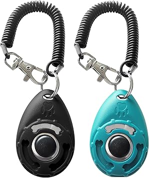
🛋️\ Sunday\ afternoon\ —\ The\ recharge
Sunday\ afternoon\ is\ for\ doing\ nothing\.
Cooper\ is\ on\ his\ bed\ next\ to\ the\ couch\.\ I'm\ reading\ a\ book\ or\ watching\ a\ game\.\ No\ toys\.\ No\ walks\.\ No\ gadgets\.
He\ just\ knows\ I'm\ here\.\ And\ I\ know\ he's\ here\.
That's\ the\ whole\ point\ of\ weekends\.
📊\ The\ math:\ time\ invested\ vs\ time\ saved
Weekday\ time\ savings
| Time | Before | Time | After | Time | Saved |
|---|---|---|---|---|---|
| 🌅 7:00 AM | Scoop food, refill water | 10 min | Auto feeder + fountain | 0 | +10 min |
| 🍳 7:30 AM | Rushed play before work | 15 min | Kong toy while you eat | 2 min | +13 min |
| 🍱 12:00 PM | Rush home or feel guilty | 30 min | Auto feeder scheduled | 0 | +30 min |
| 🐕 7:00 PM | Fumbling walk (hands full) | 30 min | Hands-free leash | 22 min | +8 min |
| 💩 Poop pickup | Bend down in all weather | 3 min | Telescoping wand | 1 min | +2 min |
\~63\ minutes\ saved\ per\ weekday\ ×\ 5\ days\ =\ \~5\.25\ hours\ per\ week
📋\ Full\ product\ list
| Category | When | Saves time | Better bonding |
|---|---|---|---|
| 🍼\ Auto\ Feeder | Daily | ✓saves\ 5\ min/day | ✓ |
| 💧\ Water\ Fountain | Daily | ✓saves\ 3\ min/day | |
| 🛏️\ Dog\ Bed | Daily | ✓ | |
| 📹\ Pet\ Camera | Daily | ✓peace\ of\ mind | ✓ |
| 🧶\ Stuffable\ Treat\ Toy\ \(Kong\-style\) | Daily | ✓buys\ 20\ min\ peace | ✓ |
| 🧩\ Puzzle\ Toy | Daily | ✓mental\ stimulation | ✓ |
| 🎒\ Hands\-Free\ Leash | Daily | ✓frees\ up\ hands | ✓ |
| 📡\ Poop\ Bag\ Wand | Daily | ✓saves\ bending | |
| 🤖\ Robot\ Vacuum | Weekend | ✓saves\ 30\ min/week | |
| 🔔\ Clicker\ Training\ Kit | Weekend | ✓ |
One\ last\ thing
Your\ dog\ doesn't\ understand\ why\ you\ leave\ every\ day\.\ They\ don't\ know\ what\ "work"\ means\.
But\ they\ understand:
• The feeder beeps — food is here
• Your voice comes through the speaker — you're thinking of me
• The door opens — you're back
• On weekends, all your time is my time
Having\ a\ dog\ isn't\ about\ how\ much\ time\ you\ spend\ on\ chores\.\ It's\ about\ the\ time\ you\ actually\ spend\ together\.
Get\ the\ tools\ that\ shrink\ the\ boring\ stuff\.\ Spend\ the\ extra\ time\ on\ what\ matters\.
Not sure where to start? The\ auto\ feeder\ is\ the\ single\ biggest\ time\-saver\. Set it up once and watch Cooper wait by it at 6 PM sharp — it's oddly satisfying. Or if walks are your pain point, grab the poop wand. Fifteen bucks and your back will thank you by day two.
Pick\ the\ one\ thing\ that\ bugs\ you\ the\ most\ right\ now\.\ Start\ there\.
That's\ the\ whole\ deal\.
This article contains affiliate links. As an Amazon Associate I earn from qualifying purchases.